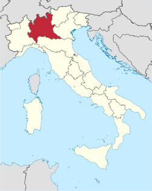

A Lombardia é uma região da Itália setentrional com 10 088 484 habitantes e
23 854 km², cuja capital é Milão. Tem limites ao norte com a Suíça, a oeste com o Piemonte,
a leste com o Vêneto e com Trentino-Alto Ádige, e ao sul com a Emília-Romanha.

É a região mais populosa da Itália.
Administração
Um sexto da população italiana ou aproximadamente 10 milhões de pessoas vivem na Lombardia. A
população da região aumentou muito nos anos 1950 e 1960 devido ao crescimento sustentado da região,
altas taxas de natalidade, e fluxo migratório proveniente de outras regiões italianas. Nos anos 1980
e 1990 o crescimento demográfico foi garantido por imigrantes estrangeiros. Um quarto dos imigrantes
estrangeiros na Itália vive em Lombardia. Até à data de 2008, o instituto nacional italiano de
estatísticas ISTAT estimou que 815 335 imigrantes estrangeiros vivem na Lombardia, equivalente a
8,4% da população total da região.
Cidades com mais de 50.000 habitantes:
Milão - 1 308 735
Bréscia - 191 059
Monza - 121 961
Bérgamo - 116 197
Varese - 96 917
Sesto San Giovanni - 83 556
Como - 83 002
Busto Arsizio - 79 552
Cinisello Balsamo - 73 770
Cremona - 71 313
Pavia - 71 064
Vigevano - 59 714
Legnano - 56 622
Rho - 50 623
Anexos
Bandeira da Lombardia
Propriedades de luxo na lombardiaTuristas em Milão na LombardiaPequeno "porto" na Lombardia